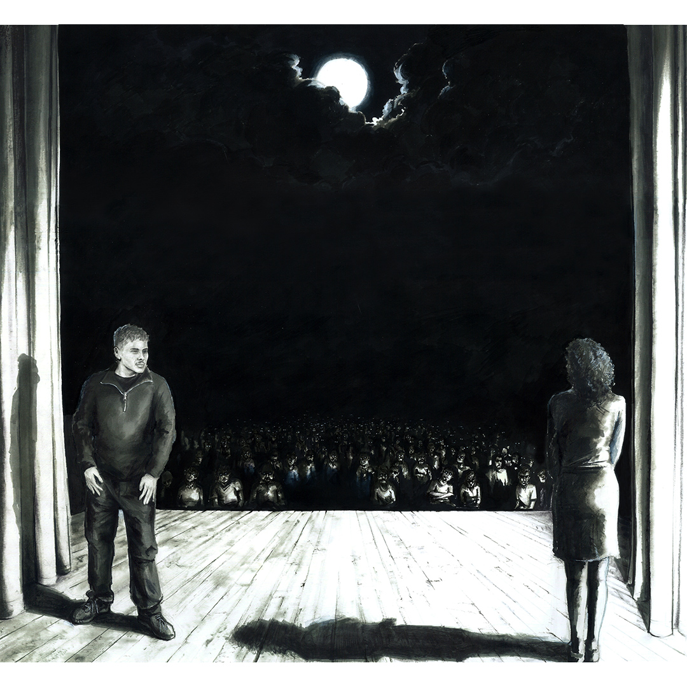

настоящее держит прошлое крепче
il presente stringe il passato più forte
the present holds the past tighter

настоящее держит прошлое крепче,
чем я когда-либо держал твои руки.
полупрозрачная нить
во сне приходящих воспоминаний
держит меня в заложниках, мучает ультразвуком.
на каждом вокзале, в каждой комнате,
под забралом каждой каски мента
я вижу твой взгляд, он въедается в мозг.
да, я вижу тебя,
да, я помню тебя.
и этот глупый спектакль с заявкой на правду -
мало похожие на нас актёры кривляются в кадре,
неумело пародируя отсутствие скорби,
тщательно вымеряют расстояние между нами.
они никогда не смогут повторить непреклонное притяжение,
закованное в безразличие,
пережить ежедневный поиск святого.
искать смысл в фатализме, менять страхи на искренность.
искать смысл в церквях и любимых кем-то веб-сериалах,
но найти его только в черных, как небо, глазах твоих,
потеряв навсегда следующим кадром.
и проснуться в поту,
загадав лишь увидеть их снова,
хотя бы, во снах.
il presente stringe il passato più forte,
di quanto io abbia mai stretto le tue mani.
un filo semitrasparente
di ricordi che riaffiorano nel sogno
mi tiene in ostaggio, mi tortura con gli ultrasuoni.
in ogni stazione, in ogni stanza,
sotto la visiera del casco di ogni sbirro
vedo il tuo sguardo, mi si incide nel cervello.
sì, io ti vedo,
sì, io ti ricordo.
e questo stupido spettacolo con pretese di verità -
attori che ci somigliano appena fanno smorfie nell'inquadratura,
maldestramente parodiando l'assenza di lutto,
misurano con cura la distanza tra noi.
non riusciranno mai a replicare l'attrazione implacabile
incatenata nell'indifferenza,
a sopravvivere alla ricerca quotidiana del sacro.
cercare un senso nel fatalismo, scambiare le paure con la sincerità
cercare un senso nelle chiese e in serie web amate da qualcun altro,
ma trovarlo solo nei tuoi occhi neri, come il cielo,
perdendolo per sempre nell'inquadratura successiva.
e svegliarmi sudato,
con il solo desiderio di vederli di nuovo,
almeno, nei sogni.
the present holds the past tighter,
than I ever held your hands.
a translucent thread
of memories surfacing in a dream
holds me hostage, tortures me with ultrasound.
at every train station, in every room,
under the visor of every cop's helmet
I see your gaze, it burns into my brain.
yes, I see you,
yes, I remember you.
and this stupid spectacle claiming to be the truth -
actors who barely resemble us, grimace in the frame,
clumsily parodying the absence of grief,
carefully measuring the distance between us.
they will never be able to replicate the relentless attraction,
shackled in indifference,
or survive the daily search for the sacred.
searching for meaning in fatalism, trading fears for sincerity.
searching for meaning in churches and web series beloved by someone else,
but finding it only in your eyes, black as the sky,
losing it forever in the very next frame.
and waking up in a sweat,
wishing only to see them again,
at least, in dreams.